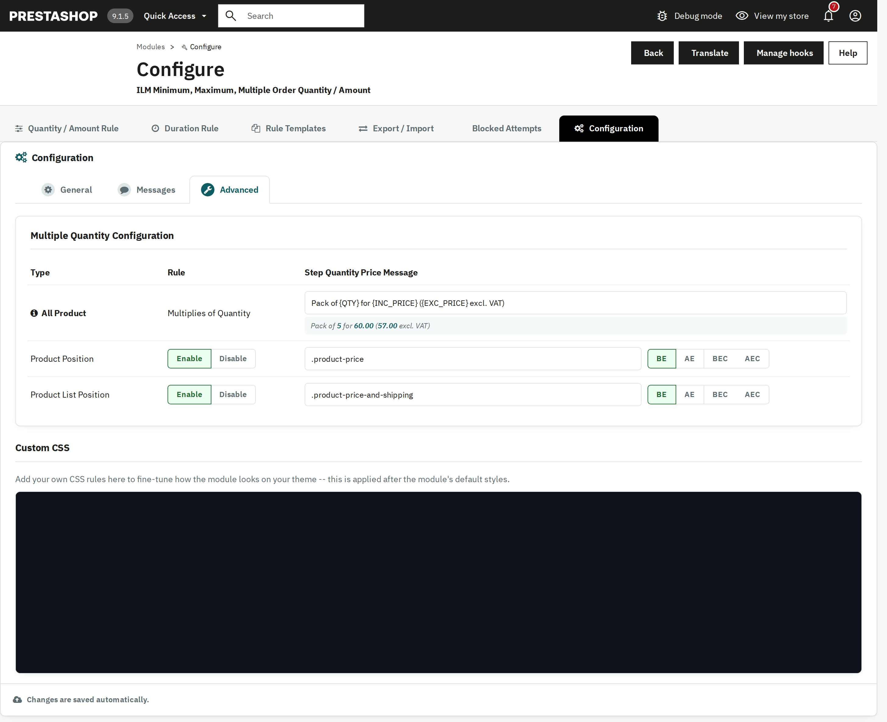

What the shopper sees: the messages shown when a rule stops them, the information on the product page, the pack price, the checkout lock and your own CSS. All of it is set on Configuration > Messages and Configuration > Advanced.
